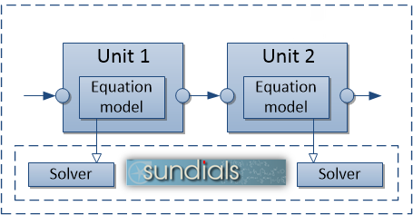

Simulation core
In simulation core, all data are processed discretely on the time scale. Different material streams and operation units are combined into the flowsheet, which is then simulated in the simulator.
{kind=link}
Material streams
All units in Dyssol are connected by material streams, which are described by a set of time points (time discretisation).
Overall properties define parameters for all selected phases. Three phases - solid, liquid and gas phases - are available. Each phase is distributed along compounds content.
Solid phase can be distributed along several multidimensional properties. Each stream on the flowsheet has the same set of compounds, phases and multidimensional properties.
All variables in material streams are time-dependent.
The structure of material streams is illustrated in the figure below. The information is transferred between operation units.

See also
Stream for program interface of material streams.
Units
A basic unit provides interfaces to the simulation system. It contains program interfaces to material streams, equation solvers and material database.
Moreover, you can develope your own units using the template for creating custom units and then add them to the Unit library. Please refer to Unit development for more information.

Simulator
In this section, you can find the information about the main calculation algorithm.
{kind=link}
Main method and approaches
Following methods are applied in Dyssol for simulation. Click the corresponding names for more background theoretical information.
Sequential-modular approach: each model is solved separately.
Dividing of a flowsheet into Partitioning and tearing.
Waveform relaxation method (WRM) for dynamic calculation of recycle streams: dividing simulation time into shorter intervals.
Data extrapolation to initialize each time window.
Convergence methods to initialize each iteration of WRM.
See also
Skorych et al., Novel system for dynamic flowsheet simulation of solids processes, 2017.
Built-in equation solvers
Dyssol uses IDA and KINSOL solvers in SUNDIALS package.
{kind=link}
IDA solver is used for automatic calculation of dynamic differential-algebraic equation systems inside the units, which applies variable-order, variable-coefficient backward differentiation formulas, in fixed-leading-coefficient form.
KINSOL solver is used for automatic calculation of nonlinear algebraic systems, which applies a fixed-point iteration with Anderson acceleration.
See also
Skorych et al., Investigation of an FFT-based solver applied to dynamic flowsheet simulation of agglomeration processes, Advanced Powder Technology, 30 (2019).